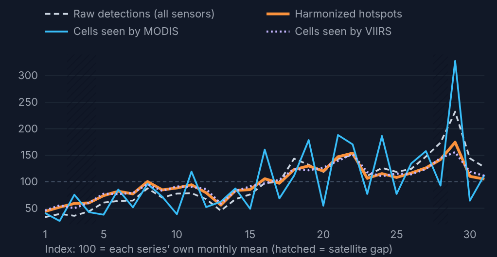
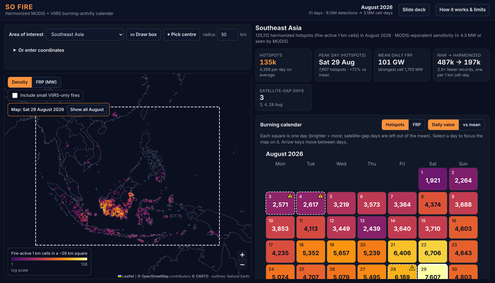
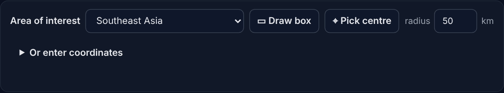
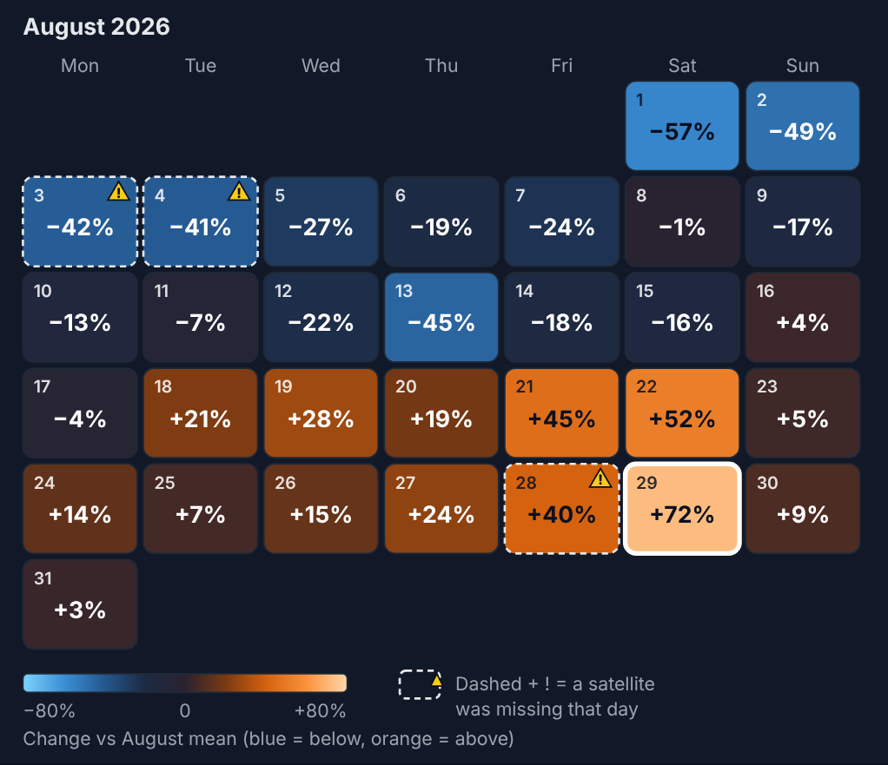
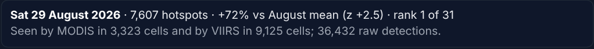
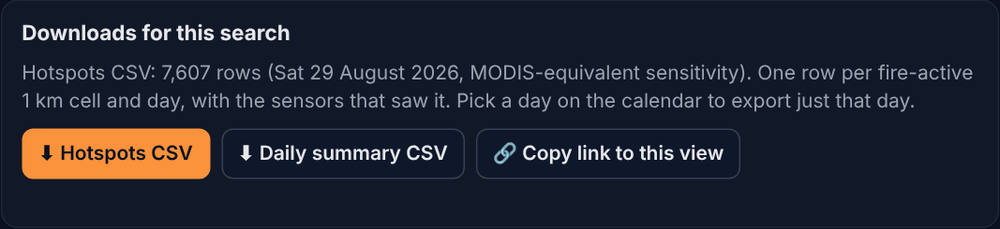
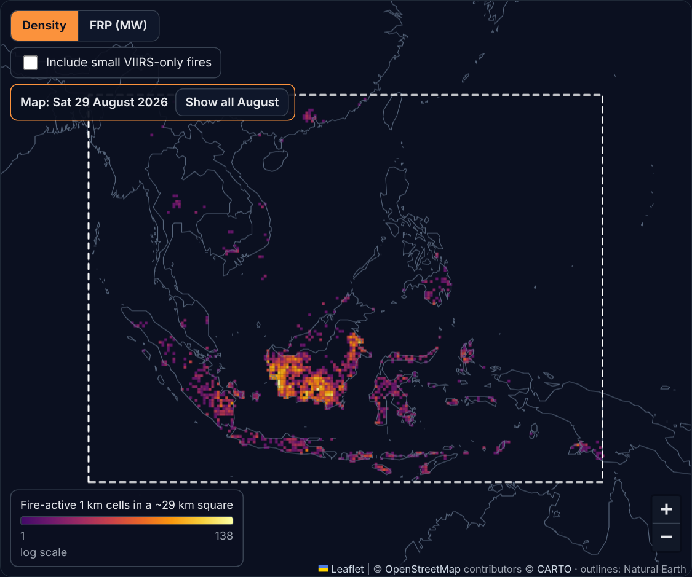

A harmonized burning calendar from MODIS + VIIRS hotspots
Challenge: Harmonization of MODIS and VIIRS Hot Spots
Team: roti bakar · Member: Kyra Leong



Draw a box, pick a point, or type lat/lon

Colour-blind-safe ramps and anomalies

Map focuses; rank, anomaly, sensor gaps

CSV, PNG/SVG, shareable link
Terra and Aqua. 1 km. The long record.
Suomi-NPP, NOAA-20, NOAA-21. 375 m. The detail.
Free active-fire data, global, near-daily.
kyraal.github.io/so-fire
